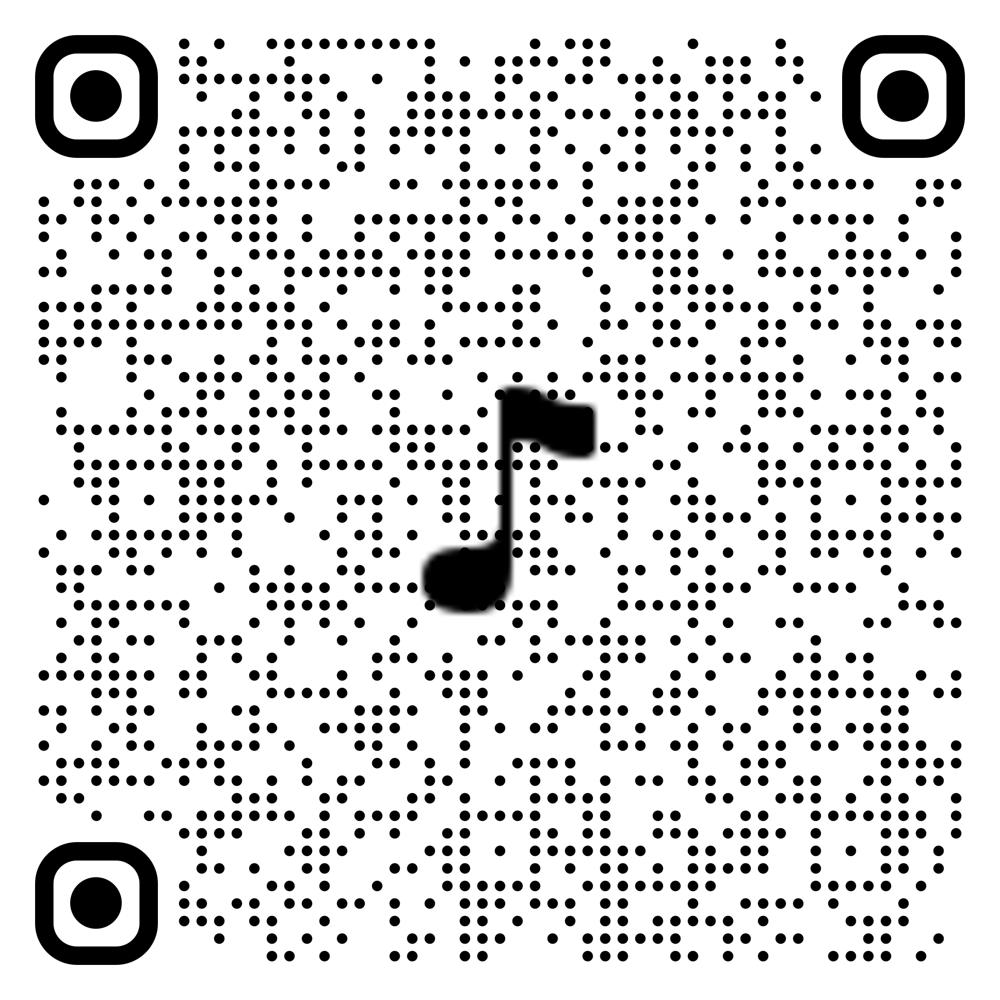

Beethoven, le tourmenté, émerge des pages froissées de sa propre musique, chaque pli de papier portant le poids de ses mélodies inachevées et de ses batailles intérieures. Ses traits sculptés, déchirés par la passion et l'intensité, incarnent la tempête créatrice qui l'anime, tandis que les partitions flottent autour de lui comme des fragments d'âme. Dans cette mosaïque de papier, il est à la fois maître et esclave de son génie, un éternel combat entre silence et symphonie.

Symphonie n°5 en do mineur, Op. 67 - Premier mouvement
Experience sonore interactive
Nova and I